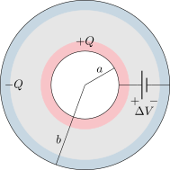
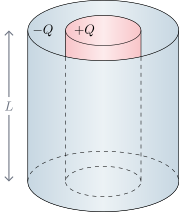
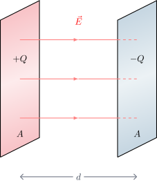
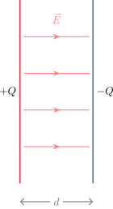

4.2 Cálculo de Capacitancia#
Para calcular la capacitancia de un arreglo geométrico, generalmente asumimos una carga \(Q\), calculamos el campo eléctrico \(\vec{E}\) mediante la ley de Gauss, determinamos la diferencia de potencial \(\Delta V = -\int \vec{E} \cdot d\vec{l}\) y finalmente aplicamos la definición \(C = Q / \Delta V\).
Condensador esférico#
Consideremos dos cascarones esféricos conductores concéntricos de radios \(a\) (interno) y \(b\) (externo).
{kind=link}

La diferencia de potencial es:
Aplicando la definición de capacitancia, obtenemos:
Condensador cilíndrico#
Para un arreglo de dos cilindros coaxiales de longitud \(L\) y radios \(a\) y \(b\) (\(L \gg b\)), el campo eléctrico en la región intermedia es \(\vec{E} = \frac{Q/L}{2\pi\epsilon_0 r}\hat{r}\).
{kind=link}

Show code cell source
from IPython.display import display, HTML
simulacion_condensador_html = """
<div style="border: 1px solid #e0e0e0; padding: 20px; border-radius: 8px; background-color: #f8f9fa; font-family: -apple-system, BlinkMacSystemFont, 'Segoe UI', Roboto, Arial, sans-serif;">
<h3 style="margin-top:0; color: #2c3e50;">Simulación 2D: Condensador Cilíndrico (Vista Transversal)</h3>
<p style="font-size: 0.95em; color: #555; margin-bottom: 15px;">Modifica los radios para observar cómo cambia la densidad de las líneas de campo eléctrico y la capacitancia del sistema.</p>
<div style="display: flex; gap: 20px; flex-wrap: wrap; margin-bottom: 15px;">
<div style="flex: 1; min-width: 250px;">
<div style="margin-bottom: 8px;">
<label style="font-weight: 600; display: inline-block; width: 160px; color: #E63946;">Radio interior a (mm): <span id="cond_val_a" style="font-weight: normal;">5</span></label>
<input type="range" id="cond_slider_a" min="1" max="15" step="0.5" value="5" style="width: 45%; vertical-align: middle;">
</div>
<div>
<label style="font-weight: 600; display: inline-block; width: 160px; color: #457B9D;">Radio exterior b (mm): <span id="cond_val_b" style="font-weight: normal;">15</span></label>
<input type="range" id="cond_slider_b" min="5" max="30" step="0.5" value="15" style="width: 45%; vertical-align: middle;">
</div>
</div>
<div style="flex: 1; min-width: 250px; font-size: 0.95em; background: #fff; padding: 10px; border-radius: 6px; border: 1px solid #ccc;">
<div style="margin-bottom: 5px;"><b>Capacitancia:</b> <span id="cond_val_C" style="color: #198754; font-weight: bold;">0</span> pF</div>
<div><b>Campo E máx (en r=a):</b> <span id="cond_val_E" style="color: #dc3545; font-weight: bold;">0</span> V/m</div>
<div style="font-size: 0.8em; color: #777; margin-top: 5px;">*Asumiendo que L = 1 m y está conectado a una diferencia de potencial de 10 V</div>
</div>
</div>
<div style="text-align: center; position: relative;">
<canvas id="cond_canvas" width="600" height="400" style="background: white; border: 1px solid #ccc; border-radius: 4px; box-shadow: 0 2px 5px rgba(0,0,0,0.05); max-width: 100%;"></canvas>
</div>
</div>
<script>
(function() {
const canvas = document.getElementById('cond_canvas');
const ctx = canvas.getContext('2d');
const slider_a = document.getElementById('cond_slider_a');
const slider_b = document.getElementById('cond_slider_b');
const val_a = document.getElementById('cond_val_a');
const val_b = document.getElementById('cond_val_b');
const val_C = document.getElementById('cond_val_C');
const val_E = document.getElementById('cond_val_E');
const epsilon_0 = 8.854e-12;
const V = 10; // Voltaje fijo para la simulación
function drawArrow(fromx, fromy, tox, toy, color, width) {
ctx.beginPath();
ctx.moveTo(fromx, fromy);
ctx.lineTo(tox, toy);
ctx.strokeStyle = color;
ctx.lineWidth = width;
ctx.stroke();
let angle = Math.atan2(toy - fromy, tox - fromx);
let dist = Math.hypot(tox - fromx, toy - fromy);
if (dist < 5) return;
let headlen = 8;
ctx.beginPath();
ctx.moveTo(tox, toy);
ctx.lineTo(tox - headlen * Math.cos(angle - Math.PI/7), toy - headlen * Math.sin(angle - Math.PI/7));
ctx.lineTo(tox - headlen * Math.cos(angle + Math.PI/7), toy - headlen * Math.sin(angle + Math.PI/7));
ctx.lineTo(tox, toy);
ctx.fillStyle = color;
ctx.fill();
}
function updateSim() {
let a = parseFloat(slider_a.value);
let b = parseFloat(slider_b.value);
// Lógica para asegurar que b > a
if (a >= b) {
b = a + 1;
slider_b.value = b;
}
val_a.innerText = a.toFixed(1);
val_b.innerText = b.toFixed(1);
// Cálculos físicos
let a_m = a / 1000;
let b_m = b / 1000;
// Capacitancia por unidad de longitud C/L = 2*pi*e0 / ln(b/a)
let C_L = (2 * Math.PI * epsilon_0) / Math.log(b_m / a_m);
val_C.innerText = (C_L * 1e12).toFixed(2); // Convertir a pF
// Campo eléctrico máximo E = V / (a * ln(b/a))
let E_max = V / (a_m * Math.log(b_m / a_m));
val_E.innerText = E_max.toFixed(0);
// Dibujo
ctx.clearRect(0, 0, canvas.width, canvas.height);
let cx = canvas.width / 2;
let cy = canvas.height / 2;
// Escala visual (30mm max radius = 180px)
let scale = 180 / 30;
let r_a_px = a * scale;
let r_b_px = b * scale;
// Dibujar cilindro exterior (Cátodo)
ctx.beginPath();
ctx.arc(cx, cy, r_b_px, 0, 2 * Math.PI);
ctx.fillStyle = '#E6E6E6'; // Azul claro
// ctx.fillStyle = 'rgba(13, 110, 253, 0.1)'; // Azul claro
ctx.fill();
ctx.lineWidth = 5;
ctx.strokeStyle = '#457B9D';
ctx.stroke();
// Dibujar líneas de campo (Vectores)
let num_lines = 16;
for(let i = 0; i < num_lines; i++) {
let angle = (i * 2 * Math.PI) / num_lines;
// Dividimos el espacio en pequeños segmentos para mostrar que la flecha es más grande cerca del centro
let r_current = a;
let step = (b - a) / 4;
for(let j=0; j<4; j++) {
let r1 = r_current;
let r2 = r_current + step * 0.7; // El 0.7 deja un pequeño espacio entre flechas
let E_mag = 1 / r1; // Relación proporcional inversa
let arrow_width = Math.max(1, E_mag * a * 2); // Grosor depende de la magnitud
let alpha = Math.max(0.2, E_mag * a); // Opacidad depende de la magnitud
let x1 = cx + r1 * scale * Math.cos(angle);
let y1 = cy + r1 * scale * Math.sin(angle);
let x2 = cx + r2 * scale * Math.cos(angle);
let y2 = cy + r2 * scale * Math.sin(angle);
drawArrow(x1, y1, x2, y2, `rgba(44, 62, 80, ${alpha})`, arrow_width);
r_current += step;
}
}
// Dibujar cilindro interior (Ánodo)
ctx.beginPath();
ctx.arc(cx, cy, r_a_px, 0, 2 * Math.PI);
ctx.fillStyle = '#FFFFFF'; // Rojo sólido
// ctx.fillStyle = '#E63946'; // Rojo sólido
ctx.fill();
ctx.lineWidth = 5;
ctx.strokeStyle = '#E63946';
ctx.stroke();
// Etiquetas de cargas
// ctx.fillStyle = 'white';
// ctx.font = 'bold 14px Arial';
// ctx.fillText("+", cx - 4, cy + 5);
// ctx.fillStyle = '#0d6efd';
// ctx.fillText("-", cx + r_b_px + 5, cy + 5);
}
slider_a.addEventListener('input', updateSim);
slider_b.addEventListener('input', updateSim);
updateSim();
})();
</script>
"""
display(HTML(simulacion_condensador_html))
Simulación 2D: Condensador Cilíndrico (Vista Transversal)
Modifica los radios para observar cómo cambia la densidad de las líneas de campo eléctrico y la capacitancia del sistema.
La diferencia de potencial resulta:
Por lo tanto, la capacitancia es:
Condensador de placas paralelas#
Consiste en dos placas metálicas paralelas de área \(A\) separadas por una distancia \(d\). El campo eléctrico, considerado uniforme entre las placas, tiene una magnitud de \(E = \frac{\sigma}{\epsilon_0}\), donde \(\sigma = Q/A\).
{kind=link}

{kind=link}

La diferencia de potencial es simplemente \(\Delta V = Ed = \frac{Q}{\epsilon_0 A}d\). La capacitancia es entonces:
Show code cell source
from IPython.display import display, HTML
simulacion_placas_simple_html = """
<div style="border: 1px solid #e0e0e0; padding: 20px; border-radius: 8px; background-color: #f8f9fa; font-family: -apple-system, BlinkMacSystemFont, 'Segoe UI', Roboto, Arial, sans-serif;">
<h3 style="margin-top:0; color: #2c3e50;">Simulación 2D: Condensador de Placas Paralelas (Vacío)</h3>
<p style="font-size: 0.95em; color: #555; margin-bottom: 15px;">Modifica el área geométrica y la separación para observar su impacto en la capacitancia y el campo eléctrico (asumiendo 10V constantes y vacío entre las placas).</p>
<div style="display: flex; gap: 20px; flex-wrap: wrap; margin-bottom: 15px;">
<div style="flex: 1.5; min-width: 280px;">
<div style="margin-bottom: 12px;">
<label style="font-weight: 600; display: inline-block; width: 170px;">Área A (cm²): <span id="pps_val_A" style="font-weight: normal;">100</span></label>
<input type="range" id="pps_slider_A" min="10" max="500" step="10" value="100" style="width: 50%; vertical-align: middle;">
</div>
<div>
<label style="font-weight: 600; display: inline-block; width: 170px;">Separación d (mm): <span id="pps_val_d" style="font-weight: normal;">5.0</span></label>
<input type="range" id="pps_slider_d" min="1" max="20" step="0.5" value="5" style="width: 50%; vertical-align: middle;">
</div>
</div>
<div style="flex: 1; min-width: 220px; font-size: 0.95em; background: #fff; padding: 10px; border-radius: 6px; border: 1px solid #ccc;">
<div style="margin-bottom: 5px;"><b>Capacitancia C:</b> <span id="pps_val_C" style="color: #198754; font-weight: bold;">0</span> pF</div>
<div style="margin-bottom: 5px;"><b>Campo Eléctrico E:</b> <span id="pps_val_E" style="color: #dc3545; font-weight: bold;">0</span> V/m</div>
<div style="margin-bottom: 5px;"><b>Carga Q:</b> <span id="pps_val_Q" style="color: #0d6efd; font-weight: bold;">0</span> pC</div>
<div style="font-size: 0.8em; color: #777; margin-top: 5px;">*V = 10 V (Batería conectada)</div>
</div>
</div>
<div style="text-align: center; position: relative;">
<canvas id="pps_canvas" width="600" height="350" style="background: white; border: 1px solid #ccc; border-radius: 4px; box-shadow: 0 2px 5px rgba(0,0,0,0.05); max-width: 100%;"></canvas>
</div>
</div>
<script>
(function() {
const canvas = document.getElementById('pps_canvas');
const ctx = canvas.getContext('2d');
const slider_A = document.getElementById('pps_slider_A');
const slider_d = document.getElementById('pps_slider_d');
const val_A = document.getElementById('pps_val_A');
const val_d = document.getElementById('pps_val_d');
const val_C = document.getElementById('pps_val_C');
const val_E = document.getElementById('pps_val_E');
const val_Q = document.getElementById('pps_val_Q');
const epsilon_0 = 8.854e-12;
const V = 10; // Voltaje fijo
function drawArrow(fromx, fromy, tox, toy, color, width) {
ctx.beginPath();
ctx.moveTo(fromx, fromy);
ctx.lineTo(tox, toy);
ctx.strokeStyle = color;
ctx.lineWidth = width;
ctx.stroke();
let angle = Math.atan2(toy - fromy, tox - fromx);
let dist = Math.hypot(tox - fromx, toy - fromy);
if (dist < 4) return;
let headlen = 8;
ctx.beginPath();
ctx.moveTo(tox, toy);
ctx.lineTo(tox - headlen * Math.cos(angle - Math.PI/7), toy - headlen * Math.sin(angle - Math.PI/7));
ctx.lineTo(tox - headlen * Math.cos(angle + Math.PI/7), toy - headlen * Math.sin(angle + Math.PI/7));
ctx.lineTo(tox, toy);
ctx.fillStyle = color;
ctx.fill();
}
function updateSim() {
let A_cm2 = parseFloat(slider_A.value);
let d_mm = parseFloat(slider_d.value);
val_A.innerText = A_cm2;
val_d.innerText = d_mm.toFixed(1);
// Cálculos físicos
let A_m2 = A_cm2 * 1e-4;
let d_m = d_mm * 1e-3;
// C = e0 * A / d (Vacío)
let C = (epsilon_0 * A_m2) / d_m;
let C_pF = C * 1e12;
val_C.innerText = C_pF.toFixed(2);
// E = V / d
let E = V / d_m;
val_E.innerText = E.toFixed(0);
// Q = C * V
let Q = C * V;
let Q_pC = Q * 1e12;
val_Q.innerText = Q_pC.toFixed(2);
// Dibujo
ctx.clearRect(0, 0, canvas.width, canvas.height);
let cx = canvas.width / 2;
let cy = canvas.height / 2;
// Escalas visuales
let scale_d = 150 / 20;
let d_px = d_mm * scale_d;
// Ancho placa
let side_cm = Math.sqrt(A_cm2);
let scale_w = 400 / Math.sqrt(500);
let w_px = side_cm * scale_w;
let plate_thickness = 8;
let top_y = cy - d_px / 2;
let bottom_y = cy + d_px / 2;
// Campo Eléctrico (Flechas)
let num_arrows = Math.max(3, Math.floor(w_px / 40));
let arrow_spacing = w_px / num_arrows;
let E_intensity = E / (V / 1e-3); // Normalizado
let arrow_width = Math.max(1, E_intensity * 3);
let arrow_alpha = Math.max(0.3, E_intensity);
for(let i = 0; i <= num_arrows; i++) {
let x = (cx - w_px/2) + i * arrow_spacing;
drawArrow(x, top_y + plate_thickness/2 + 2, x, bottom_y - plate_thickness/2 - 2, `rgba(44, 62, 80, ${arrow_alpha})`, arrow_width);
}
// Placa Superior (Carga Positiva)
ctx.fillStyle = '#E63946';
ctx.fillRect(cx - w_px/2, top_y - plate_thickness/2, w_px, plate_thickness);
// ctx.fillStyle = 'white';
// ctx.font = 'bold 16px Arial';
// ctx.textAlign = 'center';
// ctx.fillText("+++++", cx, top_y - 12);
// Placa Inferior (Carga Negativa)
ctx.fillStyle = '#457B9D';
ctx.fillRect(cx - w_px/2, bottom_y - plate_thickness/2, w_px, plate_thickness);
// ctx.fillStyle = '#0d6efd';
// ctx.fillText("-----", cx, bottom_y + 25);
}
slider_A.addEventListener('input', updateSim);
slider_d.addEventListener('input', updateSim);
// Disparar la primera actualización
updateSim();
})();
</script>
"""
display(HTML(simulacion_placas_simple_html))
Simulación 2D: Condensador de Placas Paralelas (Vacío)
Modifica el área geométrica y la separación para observar su impacto en la capacitancia y el campo eléctrico (asumiendo 10V constantes y vacío entre las placas).